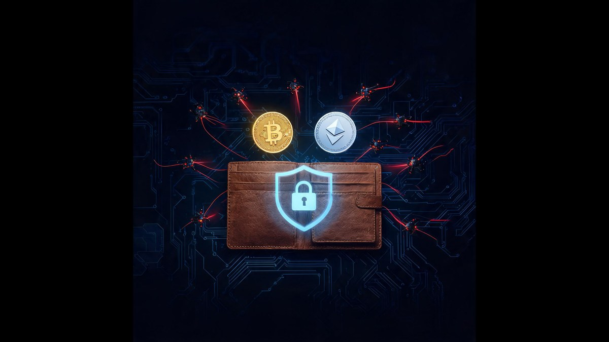

Crypto Hacks 2026: $2.7 Billion Stolen — So Why Are Wallets Still Getting Hacked?

Crypto thieves are having their best year ever — $2.7 billion stolen in nine months, and the quarter that just ended was the worst in history. But here's what the charts hide: the blockchain itself hasn't been beaten. The hand holding the phone has.
Quick answer: Wallets still get hacked in 2026 because attacks target people and trusted software, not cryptography: Drainer-as-a-Service phishing kits drained about $135 million from 76,582 Ethereum wallets, 26 fake wallet apps reached Apple's App Store, a firmware flaw exposed $116 million in Coldcard keys, and a trojanized Trust Wallet extension hit 2,520 wallets. Institutional losses ($2.68 billion gross, five breaches = 59%) are a separate economy. Prevention beats recovery — only about 16 cents per dollar gets frozen or returned.
📑 Table of Contents
The short version
CertiK counted 658 security incidents in the first nine months of 2026 with roughly $2.68 billion in gross losses. After subtracting $420.4 million in frozen or returned assets, the adjusted loss still stands near $2.26 billion (CryptoSlate, 2026). September alone — driven by the $387.5 million Bitget breach and the $318.7 million Liquid Network incident — became the costliest month of the year at about $766.5 million. And the more unsettling pattern sits underneath the headline: researchers keep documenting that most individual wallets are not defeated by cryptography at all. They are defeated by users tricked into handing over access — phishing pages, malicious approvals, fake apps and drainer kits. For example, the ACM Internet Measurement Conference study found 83.5% of drainer victims lost less than $1,000 — small amounts, tens of thousands of times over.
The 2026 loss data in plain numbers
Just five breaches account for roughly $1.57 billion — about 59% of the entire year's gross losses. Bitget leads at $387.5 million, followed by Liquid Network at $318.7 million, KelpDAO at $291.3 million, Drift Protocol at $285.3 million and one unidentified victim at $284.8 million (CertiK via CryptoSlate, 2026). That concentration cuts both ways: the scary annual total comes from a handful of institutional failures, but the everyday threat to a personal wallet barely registers in these charts — it happens one drained wallet at a time. Third-quarter losses alone reached $1.26 billion across 247 incidents (CryptoTicker, 2026), and September's $768 million made it the worst single month on record this year. For example, remove every hack except the top five and 2026 is still a bad year — but your personal odds barely move, because retail wallets face a completely different attack economy.
Who is actually taking the money
State-sponsored attackers — mostly North Korea — dominate the institutional side of the ledger. Blockchain analytics firm Elliptic attributes more than $1 billion of 2026 thefts to suspected DPRK operations across at least 51 incidents, over 37% of the industry-wide figure, and assesses the Bitget breach as highly likely linked to North Korea based on laundering behavior and shared infrastructure (CryptoSlate, 2026). The same campaign context includes the record $1.46 billion Bybit theft of February 2025, formally attributed by the FBI to Lazarus Group. Retail is a different market: the FBI's IC3 logged $5.6 billion in crypto fraud losses in 2023, up 45% year over year, flowing to thousands of independent criminal crews. For example, TRM Labs found the $116 million Coldcard funds pooling quietly with minimal laundering — the opposite of state-linked crews like TraderTraitor, which begin mixing within hours.
How wallets actually get drained in 2026
In 2026 a crypto wallet gets drained through five proven attack patterns, and none of them requires breaking blockchain cryptography. Drainer-as-a-Service phishing took about $135 million from 76,582 Ethereum wallets (Group-IB, 2026); 26 fake wallet apps reached Apple's App Store (Kaspersky, 2026); a five-year-old Coldcard firmware flaw allowed remote brute-forcing of $116 million in bitcoin (TRM Labs, 2026); a trojanized Trust Wallet browser extension drained $8.5 million from 2,520 wallets; and physical wrench attacks climbed to 52 incidents worth $124.2 million in six months (CertiK, 2026). Each vector ends the same way: an authorized transaction or a captured seed phrase — consent, forged. The flowcharts below show exactly how each attack unfolds.
Why does a single approval drain an entire wallet?
The dominant retail threat is the crypto wallet drainer — a phishing tool that tricks users into connecting their wallet and approving a transaction that hands attackers spending permission over the wallet's contents. Group-IB (2026) documents how drainers evolved into an industrial Drainer-as-a-Service market: a 2025 ACM study found DaaS phishing drained roughly $135 million from 76,582 victim wallets on Ethereum between March 2023 and April 2025, supplied by 56 operators renting kits to more than 6,000 affiliates. Distribution is relentless — malicious ads, fake airdrops, spam across Discord, Telegram and X, compromised social accounts. Once the victim signs, the transfer is on-chain and effectively irreversible. For example, 8,856 accounts were phished more than once — proof the warning signs are easy to miss even after you've already been drained.

Are fake wallet apps still a real threat in 2026?
Yes — and they now reach the most tightly controlled app store in the world. Kaspersky researchers identified 26 fraudulent crypto wallet apps on Apple's App Store impersonating MetaMask, Ledger, Trust Wallet, Coinbase, TokenPocket, imToken and Bitpie (Kaspersky, 2026). The scheme is layered: a harmless-looking stub app opens a phishing page imitating the App Store, persuades the user to install a developer profile, then installs a trojanized wallet. On hot wallets the malware watches the recovery screen and captures seed phrases; against hardware wallets it simply asks for the phrase through phishing — which the genuine Ledger app never does. The campaign has run since at least fall 2025 with no regional restrictions. For example, the tell researchers flagged: the real Ledger Wallet app never requests your 24-word phrase — any app that does is a thief.

Can a hardware wallet get hacked without ever being touched?
The $116 million Coldcard exploit proved that even "air-gapped" security depends on firmware integrity. TRM Labs (2026) traced the attack to a March 2021 firmware build-configuration error that made some Coldcard wallets fall back to a weak software random number generator during seed generation, collapsing effective key strength from 128 bits to as little as 40 bits — brute-forceable remotely, no physical access required. Beginning July 30, 2026, attackers swept roughly 1,816 BTC (~$116 million) from more than 5,200 addresses across four waves. The critical lesson TRM emphasizes: updating firmware does not fix existing wallets — the weak seed was already generated, so anyone who created a Coldcard wallet between March 2021 and the patch must migrate to a new seed entirely. For example, this is why "my keys are offline so they're safe" is only true if the keys were random enough to begin with.

How do attackers get inside trusted software?
Supply-chain compromises let attackers steal at platform scale. In December 2025, a malicious version of the Trust Wallet Chrome extension reached the Chrome Web Store outside the vendor's normal release process; Group-IB's High-Tech Crime Trends 2026 report confirmed 2,520 affected wallets and roughly $8.5 million stolen, traced to 17 attacker-controlled addresses. The playbook dates to the 2023 Ledger Connect Kit incident, where attackers phished a former employee whose publishing access was still active and pushed the Angel Drainer toolkit into legitimate infrastructure, draining wallets across multiple dApps in under two hours. Hardware shipments became a vector too: TechCrunch (2026) reported hacks at shipping companies that mail hardware wallets, exposing customer data to physical attacks. For example, the common thread is borrowed trust — every one of these attacks wore the face of a brand the victim already trusted.

Are physical attacks on crypto holders really increasing?
Yes — measurably. CertiK recorded 52 wrench attacks (physical coercion of crypto holders) in the first half of 2026, up from 39 in the same period last year, with exposure climbing from $10.5 million to $124.2 million and the average incident value rising to about $2.4 million from roughly $270,000 (CryptoSlate, 2026). The term comes from the xkcd joke that a $5 wrench defeats any encryption — and 2026 data suggests criminals agree. Physical security now belongs in any honest threat model: publicizing holdings, discussing wallets in public, or posting travel plans while carrying significant assets creates real-world risk no software can patch. For example, the fivefold jump in average exposure per attack indicates criminals specifically target holders they believe are wealthy — often identified through social media oversharing.
How to tell if your wallet is compromised
Five signals separate a real compromise from a false alarm, and each maps to a documented 2026 attack pattern.
1. Unauthorized outbound transfers — check your address on a block explorer, not just the wallet app. Coldcard victims discovered thefts only when four sweep waves hit 5,200 addresses (TRM Labs, 2026).
2. Standing token approvals you don't recognize — drainers survive on old permissions; revoking them costs nothing and closes the door.
3. Malware on the device — the 26 fake App Store apps captured seed phrases from the recovery screen itself (Kaspersky, 2026).
4. Unsolicited tokens or NFTs — bait for the next approval scam, per Chainalysis and Group-IB drainer research.
5. Balances that don't reconcile — transfers during hours you were asleep are the classic first sign Reddit victims report. Verify from a clean device: checking from an infected one only hands the attacker your recovery phrase.
Hacked right now? What to do in the first hour
The first hour matters more than the next month, because funds that stay in attacker addresses can sometimes be frozen. CertiK counts $420.4 million in 2026 assets frozen or returned — but only when the theft is reported while the trail is fresh. Move anything remaining to a fresh wallet with a newly generated seed, not a new address on the old seed, since the compromise may include the phrase itself. Document everything immediately: transaction IDs, wallet addresses, timestamps and screenshots, which The Cyber Helpline (2026) flags as the foundation of any later investigation. Report to your exchange so its risk team watches for deposits, and file with police or your national cybercrime channel — in the US that's the FBI's IC3 at ic3.gov. Then clean or replace the device before touching any replacement wallet. For example, never pay a "recovery service" that guarantees results or demands upfront payment — that is a second scam layered on the first.

Can stolen crypto be recovered? The honest answer
Most stolen crypto is never recovered, and any advice that pretends otherwise is marketing. The Cyber Helpline (2026) puts it plainly: once cryptocurrency is stolen it is "incredibly unlikely" you will recover it, because transactions cannot be reversed and thieves convert to cash quickly. What works in a minority of cases follows a narrow path: tracing funds on the public blockchain, reporting fast enough that exchanges or issuers freeze assets before laundering — as Liquid Network did by recovering a large portion of its $318.7 million incident — and pursuing recovery through law enforcement with documented evidence. The FBI's victim-services guidance routes complaints through ic3.gov. But the realistic baseline for an individual retail victim remains low, and the asymmetry is the point: prevention is cheap, recovery is rare. For example, the gap between $420.4 million frozen globally and $2.68 billion gross losses is the industry's honest recovery rate — about 16 cents on the dollar.
What actually protects you (evidence-backed)
Hardware wallet, bought right. Manufacturer or authorized reseller only — intercepted shipments are documented (TechCrunch, 2026) — with firmware updated and seeds migrated when advisories name your device generation.
Never re-type a seed phrase. The 26 fake App Store apps (Kaspersky, 2026) and every drainer kit depend on this single mistake; a genuine wallet app never asks after setup.
Bookmarks over search ads. Malicious advertisements remain the top drainer distribution channel (Group-IB, 2026) — verify URLs character by character before connecting.
Revoke approvals quarterly. One stale permission is enough; Etherscan's revoke tool closes it in seconds.
Keep holdings private. Wrench attacks jumped to 52 incidents worth $124.2 million in H1 2026 (CertiK) — oversharing invites physical risk no software patches.
For the complete step-by-step playbook, see Cryptocurrency Security: The Complete Protection Resource. Every step above targets a documented 2026 attack pattern — none is theoretical.
Key takeaway: In 2026 the blockchain still hasn't been beaten — consent has. Five breaches drive 59% of the $2.68 billion institutional toll, but your wallet falls one approval at a time: verify before you sign, revoke what you don't use, and never re-type a seed phrase.
FAQs
Why are crypto wallets still getting hacked in 2026?
Why are crypto wallets still getting hacked in 2026? Because almost no attacks break the cryptography itself — they break the human. The 2026 loss data shows retail wallets drained by phishing approvals, fake wallet apps, malware and drainer kits: Drainer-as-a-Service operations took about $135 million from 76,582 Ethereum wallets in a two-year study period, and Kaspersky found 26 fake wallet apps on Apple's App Store impersonating Ledger, MetaMask and Trust Wallet (Sources: Group-IB, Kaspersky, 2026). Institutional losses are different — five breaches account for roughly 59% of 2026's $2.68 billion gross losses, led by the $387.5 million Bitget hack. For example, both threat economies share one outcome: money moves because someone was tricked or a trusted system was compromised, not because the blockchain failed.
How do I know if my crypto wallet is compromised?
Four checks confirm a compromise within minutes. First, open your address on a block explorer such as Etherscan: any outbound transfer you did not sign — including tiny dust amounts, which attackers send to test the pipe — means a key or approval is exposed. Second, audit token approvals on Etherscan's approval-revoke tool, because a drainer needs only one standing permission to sweep funds without your signature. Third, scan the device for malware: Kaspersky's 2026 research documented trojanized wallet apps that watch the seed-phrase screen itself. Fourth, treat any token or NFT that appears without your action as bait — unsolicited airdrops are the standard lure that follows a leaked address. For example, run all four checks from a clean device, not the one you suspect.
Can stolen crypto be recovered after a hack?
Usually no, and honest advice starts there. On-chain transfers are irreversible and thieves convert funds quickly. Recovery happens in a minority of cases when victims document everything (transaction IDs, addresses, timestamps), report fast to exchanges and law enforcement such as the FBI's IC3, and assets get frozen before laundering — CertiK counted $420.4 million frozen or returned in 2026 against $2.68 billion gross losses, roughly 16 cents recovered per dollar lost. For example, never pay an upfront-fee "recovery service"; that is a second scam targeting victims of the first (Sources: The Cyber Helpline, FBI, CertiK, 2026).
What is a crypto wallet drainer?
A crypto wallet drainer is a phishing kit that tricks you into connecting your wallet and signing an approval that grants attackers permission to move your funds — no password theft involved. The 2025 ACM Internet Measurement Conference study quantified the scale: $135 million drained from 76,582 wallets on Ethereum between March 2023 and April 2025, run by 56 operators who rent kits to more than 6,000 affiliates for a share of the loot (Sources: Group-IB, 2026). Distribution runs through malicious search advertisements, fake airdrops, and spam in Discord, Telegram and X comment sections. For example, 83.5% of victims lost under $1,000 each — small amounts that keep most incidents unreported.
Are hardware wallets still safe after the Coldcard exploit?
Yes — with three conditions the 2026 evidence makes explicit. The Coldcard incident was a March 2021 firmware build error that weakened seed randomness, cutting effective key strength from 128 bits to as little as 40 bits and letting attackers brute-force roughly $116 million from 5,200 addresses without physical access (Sources: TRM Labs, 2026). First, update firmware and migrate to a freshly generated seed if your device generation is ever named in an advisory — updating alone does not fix an already-weak seed. Second, buy only from the manufacturer or authorized resellers, because intercepted shipments are a documented risk. Third, remember that a genuine companion app never asks for your seed phrase. For example, a hardware wallet still keeps keys offline; the user supplies the operational security.
Should I keep crypto on an exchange or a personal wallet?
The 2026 data prices both options precisely. Exchange custody concentrates institutional risk: the $387.5 million Bitget breach and $318.7 million Liquid Network hack together accounted for more than a quarter of the year's gross losses, yet Bitget's protection fund restored customer coverage within days — risk you don't control, cushioned by reserves you don't fund. Self-custody distributes personal risk: drainers, fake apps and phishing produced most retail losses, and the honest recovery rate across the industry is about 16 cents per dollar (Sources: CertiK, 2026). For example, the evidence-aligned split: long-term holdings on a hardware wallet bought from the manufacturer, trading-sized amounts on an exchange, and a seed phrase that never gets typed into any app after setup day.
The Bottom Line
The 2026 crypto hack epidemic is two epidemics wearing one headline. Institutions are losing billions to state-scale adversaries — five breaches, 59% of the money, North Korea behind more than a third of it. Individuals are losing their savings one convincing phishing page at a time, and the recovery rate says everything: about 16 cents comes back per dollar lost. The defense that works is unglamorous and cheap: a hardware wallet from the manufacturer, a seed phrase typed exactly once in its lifetime, bookmarks instead of search ads, approvals revoked quarterly, and holdings kept private. For a complete protection system, work through our full cryptocurrency security resource and stay current with the scam patterns in our scam warning-signs guide.
Sources
- cryptoslate.com — Crypto hackers have taken $2.7 billion in 2026 and the losses are alarmingly concentrated (CertiK, Elliptic data)
- coindesk.com — Crypto lost $1.26 billion in hacks while bitcoin bulls enjoyed a monster quarter
- cryptoticker.io — Crypto Hacks: $1.26 Billion in the Third Quarter (CertiK)
- trmlabs.com — Inside the $116 Million Coldcard Hack
- group-ib.com — Crypto Wallet Drainers (ACM IMC study, DaaS economics)
- kaspersky.com — 26 fake crypto wallet apps on Apple's App Store
- cnbc.com — Bitget 'not expecting to recover a lot' from $388 million hack
- techcrunch.com — Crypto hardware wallet owners face fresh security risks after shipping-data thefts
- thecyberhelpline.com — Recover from hacked virtual currency
- fbi.gov — Cryptocurrency Investment Fraud victim services (IC3)